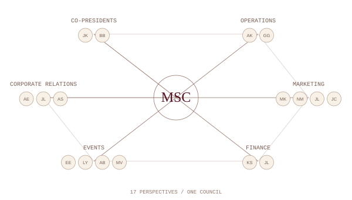
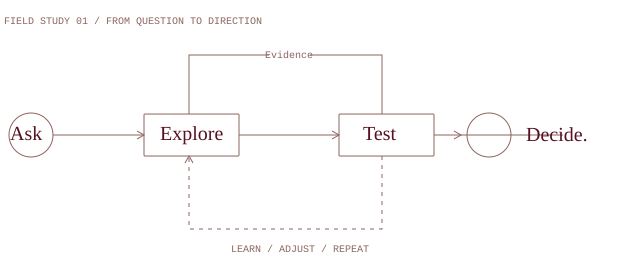

University of Toronto Scarborough Management Strategy Council · 2026–27
Learn. Network. Succeed.
Your next move. 01 / Open the brief
Inside MSC Intro Learn Network Succeed
01 — Open your perspective
Learn. Explore strategy. Challenge ideas. Find a new perspective.
A different way to think starts with a good question. Explore strategy, exchange ideas, and see familiar challenges from a new angle.
Discover our Word of the Week ↗ Strategy, one idea at a time.
02 — Find your people
Network. Meet 17 students bringing different perspectives to one council.
Seventeen students. Shared ambition. Different perspectives, brought together by a shared interest in strategy.
Meet the council ↗ Co-Presidents · Operations · Finance
03 — Put ideas into practice
Succeed. Put your ideas into practice. Find your next move at MSC.
Take your thinking beyond the classroom. Explore MSC’s experiences, contribute your perspective, and find your next opportunity to get involved.
Learn ✳ Network ✳ Succeed ✳ Think further ✳ Learn ✳ Network ✳ Succeed ✳ Think further ✳ Learn ✳ Network ✳ Succeed ✳ Think further ✳
Learn ✳ Network ✳ Succeed ✳ Think further ✳ Learn ✳ Network ✳ Succeed ✳ Think further ✳ Learn ✳ Network ✳ Succeed ✳ Think further ✳
Learn. Network. Succeed. Think further.
Ⅱ
01 / The council Curiosity, in good company.
Strategy.With people. A student-led strategy club
We’re the Management Strategy Council at UTSC. We bring students together to discuss business decisions, work through strategy questions, and meet people across the management community.
Come with a question, a point of view, or an idea for an event. There’s room to contribute.
Find your place ↘ Pause background Ⅱ
The bigger picture / A study in perspective
It comestogether. Separate ideas. Different perspectives.
SCROLL TO CONNECT Assemble ↗ Pause Ⅱ
Field notes / The council Student-led. Built on campus.
Management Strategy Council People makedifference. A club is only as good as the people who show up.
Meet the students putting the council’s plans into practice. Our departments work together on the experiences, partnerships, and ideas you see from MSC.
Get to know the council ↗
01 / Behind the council Operations · Amy Kang & Geser Ganbold THE COUNCIL / 2026–27 Different roles.
Pause threads Ⅱ
02 / Experiences Out of the classroom. Into the conversation.
On theagenda. Challenges, conversations, and reasons to come together.
The council / 2026–27 Every piece has a person behind it.
Meet the people behind the moves
A council.In play. Select a piece on the board, or a name below.
17 people. One council. Choose your introduction. From the first idea to the final detail, these are the people making it happen.
Meet the council ↗ Pause Ⅱ
The full council / Select a piece Select a piece · ← → to browse
The council / A closer look Pause Ⅱ Back to board ×
View full profile ↗ ← →
03 / The council, 2026–27 The team behind MSC.
Meetthe council. Meet the people making MSC happen.
17 members. Six departments. One council.

There’s more than one way to contribute. Find your place at MSC ↗
04 / The council in print The MSC editorial series.
A closer look. The council’s portraits, in print.
← →
05 / The weekly word The language behind the decisions.
MSC’s Word of the Week
A word worthknowing. Strategy has a language. Let’s make it a conversation.

Iteration: draft, test, refine, then repeat 01 / ASK A QUESTION Draft. 02 / TRY IT OUT Test. 03 / MAKE IT BETTER Refine. Draft. Test. Refine. Then try again. The MSC glossary Entry 01
Word of the Week iteration↗ noun · /ˌɪtəˈreɪʃən/
Repeating a process, using what you learn each time to improve the next version.
In a case presentation Revise the argument after feedback.
Read the entry ↗
The word archive Search the word archive ⌕
06 / For partners Let’s create something worthwhile.
Connect your organization with a community of curious students.
Have a workshop in mind, a case to share, or a team students should meet? Talk to our Corporate Relations team.
Partner with MSC ↗
Management Strategy Council / UTSC See youon campus. Event updates, membership questions,
Get involved ↗